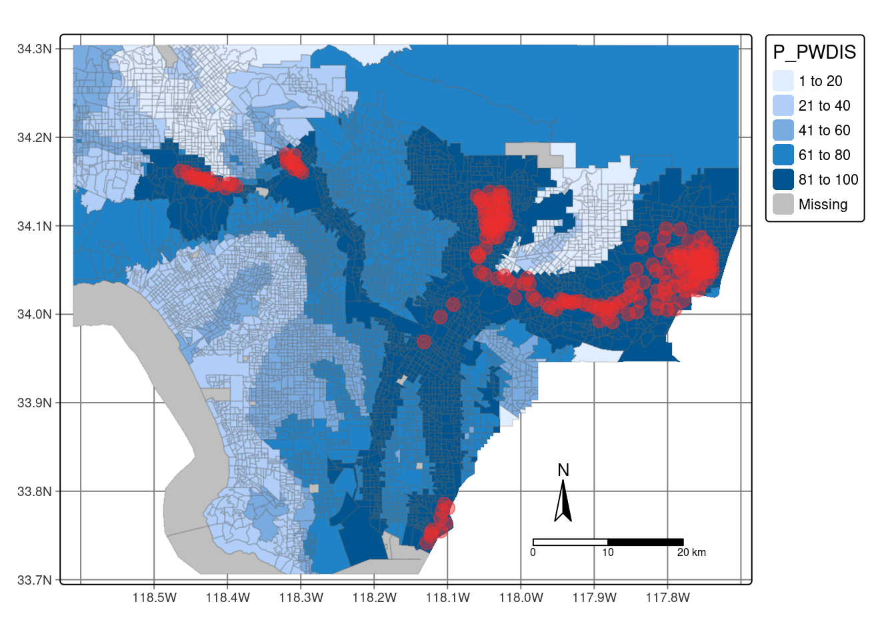

View Code
library(tidyverse)
library(stars)
library(sf)
library(tmap)
library(gridExtra)
library(here)In the 1930s, the Home Owners’ Loan Corporation (HOLC) rated neighborhoods based on their perceived safety for real estate investment. This ranking system was used to block access to loans for home ownership. This practice, more commonly known as “redlining” continues to have consequences on community health and wealth1. This includes environmental health, as redlined neighborhoods are less likely to have greenery2, and are hotter than other neighborhoods3. This analysis examines discrepancies in biodiversity observations, which tend to be lower in redlined communities4. This becomes a pressing issue as citizen science data continues to be used for additional reports, which can affect restoration project planning. This analysis will use data from the United States Environmental Protection Agency in addition to avian biodiversity data to examine the distribution of citizen science contributions.
The United States Environmental Protection Agency (EPA) EJScreen tool provides data for screening and mapping environmental or demographic information. Information is provided at the US Census tract and block level. For this analysis, we will be utilizing block group data from the EPA site.
The Digital Scholarship Lab at the University of Richmond has processed geographic data available on historic HOLC grades. The maps were created as part of the Mapping Inequality project.
Data on bird observations was obtained from the Global Biodiversity Information Facility. The Global Biodiversity Information facility is the largest aggregator of biodiversity observations in the world. This data typically contains information on the location and species observed. For this analysis, we will be assessing observations from 2021 onward.
library(tidyverse)
library(stars)
library(sf)
library(tmap)
library(gridExtra)
library(here)# read in data
ejscreen <- st_read(here("data", "EJSCREEN_2023_BG_StatePct_with_AS_CNMI_GU_VI.gdb"))
#filter to Los Angeles County
los_angeles <- ejscreen %>%
filter(CNTY_NAME == "Los Angeles County") %>%
st_transform(crs = "EPSG:4326")
# check filter accuracy
unique(los_angeles$CNTY_NAME)# read in LA redlining data
la_redlining <- st_read("https://dsl.richmond.edu/panorama/redlining/static/citiesData/CALosAngeles1939/geojson.json") %>%
st_make_valid() %>% #fix invalid geometries
st_transform(los_angeles, crs = "EPSG:4326") #reproject
# check redlining and ejscreen data have the same crs
st_crs(los_angeles) == st_crs(la_redlining)# read in bird data
birds <- st_read(here('data/gbif-birds-LA/gbif-birds-LA.shp')) %>%
filter(year == '2022') #filer to year 2022
# check the CRS for birds and redlining data
st_crs(birds) == st_crs(la_redlining)The following map provides an exploratory map to demonstrate information available through EJScreen. The percentile for wastewater discharge by census block groups (P_PWDIS) was mapped, and centroids were added to highlight areas above the 95th percentile. Additional data from EJScreen includes air quality, distance to superfund sites, cancer rates, education levels, and more.
# filter to only include P_PWDIS above 95th percentile
centroid_above_95th <- los_angeles %>%
filter(P_PWDIS > 95) %>%
st_centroid()
# create bbox to remove CA Channel islands
la_crop <- st_crop(x = los_angeles, y = st_bbox(la_redlining))
# create map
tm_shape(la_crop) + #using cropped shape to remove islands
tm_graticules() + #add graticules
tm_fill(fill = 'P_PWDIS') + #fill by percentile wastewater discharge
tm_borders(col_alpha = 0.2) + #add transparent borders
tm_shape(centroid_above_95th) + #add points w/centroid data
tm_dots(fill ='firebrick2', size = 0.7, fill_alpha = 0.5) +
tm_compass(type = "arrow", position = c("right", "bottom"), size = 2) +
tm_scale_bar() 
Gee, G. C. (2008). A multilevel analysis of the relationship between institutional and individual racial discrimination and health status. American journal of public health, 98(Supplement_1), S48-S56.↩︎
Nardone, A., Rudolph, K. E., Morello-Frosch, R., & Casey, J. A. (2021). Redlines and greenspace: the relationship between historical redlining and 2010 greenspace across the United States. Environmental health perspectives, 129(1), 017006.↩︎
Hoffman, J. S., Shandas, V., & Pendleton, N. (2020). The effects of historical housing policies on resident exposure to intra-urban heat: a study of 108 US urban areas. Climate, 8(1), 12.↩︎
Ellis-Soto, D., Chapman, M., & Locke, D. H. (2023). Historical redlining is associated with increasing geographical disparities in bird biodiversity sampling in the United States. Nature Human Behaviour, 1-9.↩︎